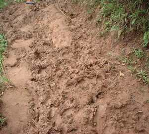
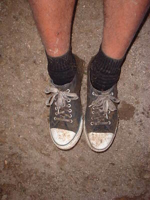
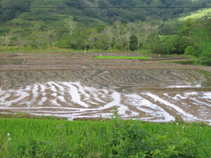

basak   
/basak/
n.
“mud”
1.
n.
mud
Wrd.Gloss: mud
Eng. mud
Tag. pútik
Ceb. lápok
Ilo.: pítak
Tigwanon: basak
Binukid: basak
WBM: basak
Obo: basak
Ilianen: basak
Tagbawa: basaʔ
Proto: basak
OCM: Ethnogeography (823), Soil (134)
DDP: Soil, dirt (1.2.2.1), Wet (1.3.3)
Online dict status: -
Usage level: B
v.
for the land (egbebasak, migbebasak/imbebasak, bebasak, actor & patient, eg><ø-rdpCV-) to become muddy
Eng. muddy, become; become muddy; slushy, ground to become
Online dict status: -
Usage level: M
adj.
(basaken, -en) muddy
Basaken ka dalan kayi ke malasi eg-uran.
The road here is muddy if it is always raining.
Eng. muddy
OCM: Personal Hygiene (515), Soil (134)
DDP: Soil, dirt (1.2.2.1), Wet (1.3.3)
Online dict status: -
Usage level: R
2.
adj.
(basaken, -en) soiled
Eng. soiled; dirty
OCM: Personal Hygiene (515), Soil (134)
DDP: Soil, dirt (1.2.2.1), Wet (1.3.3)
Online dict status: -
Usage level: R
3.
n.
(basakan, -an) rice field
Maluag ka basakan ney dengan piru kuntee warad e su naamin e te egpamelegyè.
Our rice field was wide before but today there's no more of it today because it's already been sold.
Eng. rice field; field, rice; rice paddy; paddy, rice
Tag. palayan
Ceb. basakan
OCM: Tillage (241)
Online dict status: -
Usage level: M
v.
for someone (egbebasak, migbebasak/imbebasak, bebasak, agent, eg><ø-rdpCV-) to work in a ricefield
Eng. work in a ricefield; rice field, work in a; rice paddy, work in a
Online dict status: -
Usage level: M
4.
n.
The name of a particular village in Sinuda, Kitaotao, Bukidnon.
Eng. place name, Basak; river name
Online dict status: -
Usage level: M
Updated by: RJH,AAA,NJK,NJK,QDL,NJK,RAA,QDL
Last updated: 20/Apr/2018
"basak" in text "The Barrio Fiesta (Egsahakeen) and Castration"
"Egbebasak" in text "Ka timpu"
"basak" in text "Ka kalibutan"
"pegbebasak" in healthbook "Migsistu si Wini"
This page last updated: 28-Dec-2019
Copyright © 2009-2014, Matigsalug Language Christian Association, Inc